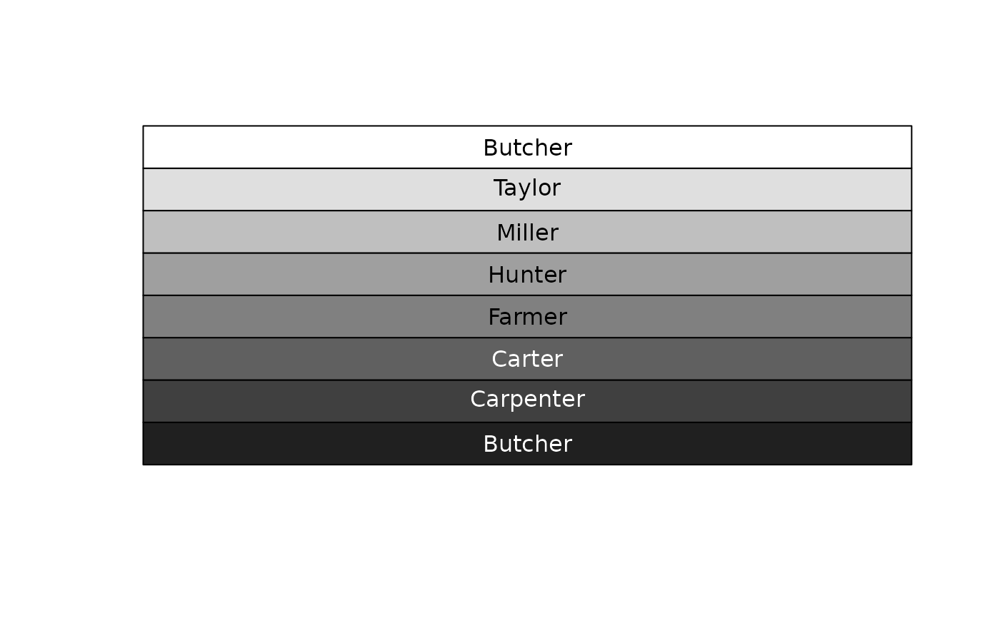
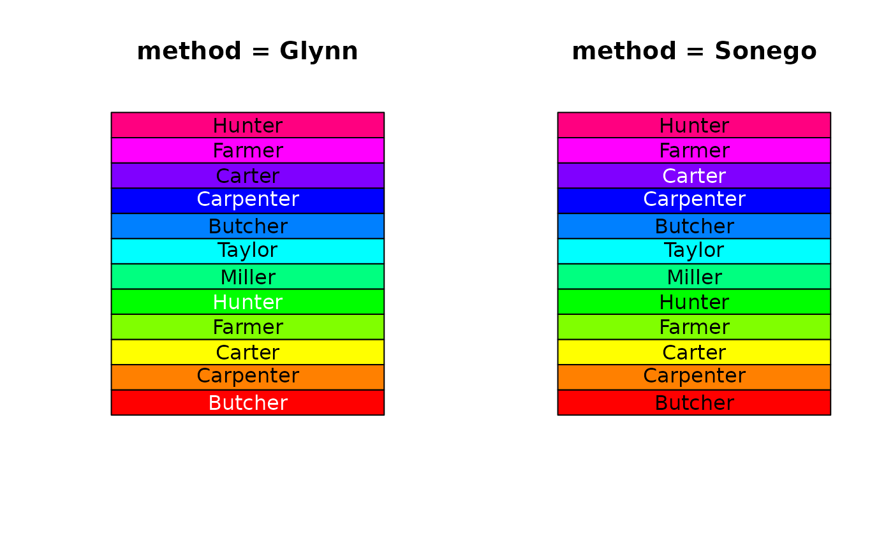

TextContrastColor.RdText of a certain color when viewed against certain backgrounds can be hard to see.
TextContrastColor returns either black or white depending on which has the better contrast.
TextContrastColor(col, white = "white", black = "black", method = c("glynn", "sonego"))
| col | vector of any of the three kind of R colors, i.e., either a color name (an element of |
|---|---|
| white | the color for the dark backgrounds, default is |
| black | the color for the bright backgrounds, default is |
| method | defines the algorithm to be used. Can be one out of |
A simple heuristic in defining a text color for a given background color, is to pick the one that
is "farthest" away from "black" or "white".
The way Glynn chooses to do this is to compute the color intensity,
defined as the mean of the RGB triple, and pick "black" (intensity 0) for text color if the background
intensity is greater than 127, or "white" (intensity 255) when the background intensity is less than or equal to 127.
Sonego calculates L <- c(0.2, 0.6, 0) %*% col2rgb(color)/255 and returns "black" if L >= 0.2 and "white" else.
a vector containing the contrast color (either black or white)
Andri Signorell <andri@signorell.net> based on code of Earl F. Glynn, Stowers Institute for Medical Research, 2004
# works fine for grays PlotArea( y=matrix(rep(1, times=3, each=8), ncol=8), x=1:3, col=gray(1:8 / 8), ylab="", xlab="", axes=FALSE )# and not so fine, but still ok, for colors par(mfrow=c(1,2)) PlotArea( y=matrix(rep(1, times=3, each=12), ncol=12), x=1:3, col=rainbow(12), ylab="", xlab="", axes=FALSE, main="method = Glynn" ) text( x=2, y=1:12-0.5, levels(d.pizza$driver), col=TextContrastColor(rainbow(12))) PlotArea( y=matrix(rep(1, times=3, each=12), ncol=12), x=1:3, col=rainbow(12), ylab="", xlab="", axes=FALSE, main="method = Sonego" )